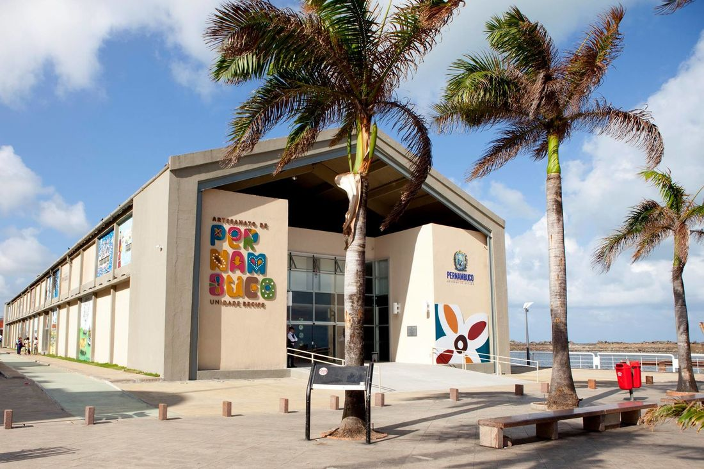

Recife: descubra quais são os principais encantos
Recife é uma cidade brasileira que possui diferentes encantos. Ao contrário do que muitos pensam, não são apenas as belezas naturais que atraem os turistas. A cidade preserva inúmeros resquícios do período colonial.
Marco Zero
O Marco Zero, na Praça Rio Branco, é conhecido como local de fundação da cidade do Recife e também como ponto inicial
de contagem das distâncias calculadas a partir da cidade. O lugar é um dos pontos mais importantes na capital Pernambucana,
pois é também uma região de forte movimento durante o Carnaval.

Aproveite sua visita para tirar uma foto com os dois marcos (o antigo e o novo), observar a vista para o Parque de Esculturas
e os edifícios do Centro Cultural da Caixa e da Associação Comercial de Pernambuco.


Se quiser fazer compras, vale a pena visitar o novo Mercado de Artesanato, que também fica no local.
